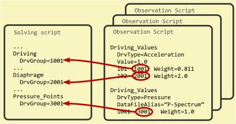

The acoustic field needs to be driven, either by Pressure_Points or by Boundary Elements, which are linked to a Driving-section or by elements, which are generated by a Diaphragm.

ABEC provides a powerful feature, which allows assigning the actual driving-values at observation-stage, i.e. after solving of the Boundary Element Analysis. At solving stage the driving is only marked, so to say, there are no driving-values yet. The actual values are bound later at observation-stage with the help of the section Driving_Values, which allows for constant values or a data-file. Alternatively the observation can be coupled to a Lumped-Element Network. In this way a structure can be driven with a range of driving values without the need of re-solving. See also paper [9].
In order to make the late-binding of driving work, it is necessary to provide a link-parameter in the solving-script, which is an index assigned to DrvGroup=. Once assigned, any observation-script or Lumped Element-script, respectively, can take reference to this driving-section. The reference is called DrvGroup=, too.
Observations can be filtered on driving-groups. In this way an observation item shows only the response of the system as driven by a sub-set of drivers, see parameter DrvGroups=.
If you couple the Boundary Element Domain to a Lumped Element Network there is no change for the solving script. In order to make a LE-Script active for an observation script there should be:
The link is via DrvGroup= values, which should be specified at components of the LE-Script: RadImp, Enclosure (vented), Driver and Speaker.
In coupling-mode the actual driving source is located inside the Lumped-Element Network and its value is specified at Def_Driving.